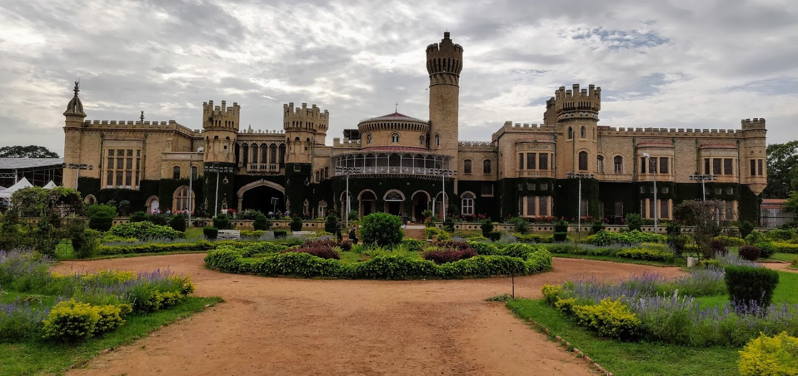
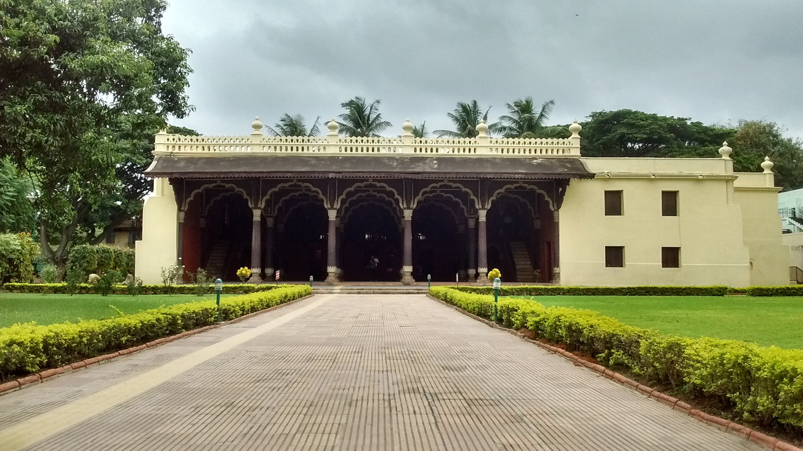
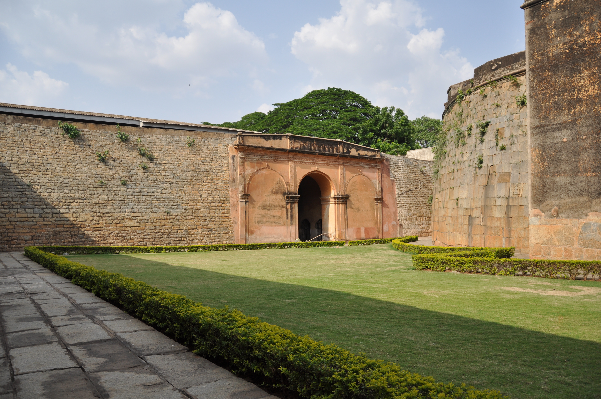
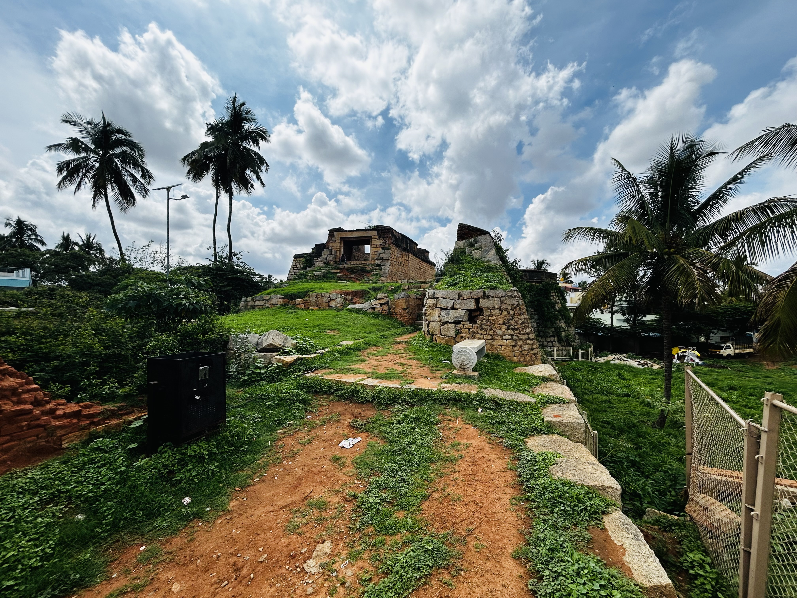

Historic Places
Explore some of Bengaluru's most fascinating historical landmarks, from royal palaces and ancient forts to monuments that reflect the city's architectural and cultural heritage.

Bangalore Palace
Bangalore Palace is one of Bengaluru's most famous royal landmarks. Inspired by Windsor Castle, the palace is known for its Tudor-style architecture, fortified towers, elegant interiors, wooden carvings, paintings, and expansive grounds.
View Details & Gallery →
Tippu Sultan’s Summer Palace
Completed in 1791 during the reign of Tipu Sultan, this summer residence is built predominantly from teakwood with grand fluted pillars, cusped arches, and decorative floral ceiling paintings. It is an important example of Indo-Islamic architecture in Bengaluru.
View Details & Gallery →
Bengaluru Fort
Originally constructed as a mud fort in 1537 by Kempe Gowda I, the founder of Bengaluru, the fort was later rebuilt in stone by Hyder Ali and Tipu Sultan. The surviving Delhi Gate and surrounding structures preserve important elements of the city's early history.
View Details & Gallery →
Devanahalli Fort
Historic fort near Bengaluru known for its stone walls, gateways, bastions, and association with Tipu Sultan.
View Details & Gallery →